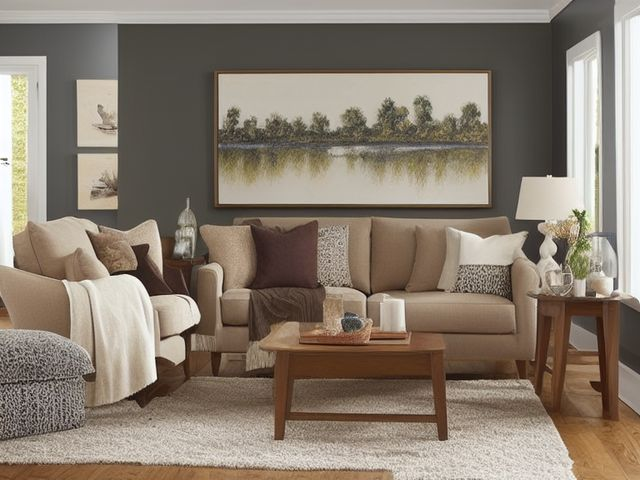

Living Room micro zone
The Sofa and Seating
Somewhere every person in the house can sit down without first moving something.
One session: 30-45 min. most of it in Sort, because the cushion seams and the throw pile take longer than you expect

What done looks like
Every seat on the sofa and every armchair is sittable without lifting a single thing off it. Throws folded to one size in one basket, at most one cushion per seat left in place, and both remotes in the tray on the arm with batteries that work.
Check these before you start
- Fall, cut, or crushRecliner footrests and sofa bed frames close hard on fingers and small feet, especially with a child sitting on the floor in front of the chair.
- FallA throw blanket hanging off the sofa onto the floor is the classic night-time trip, because you stand up from that exact spot in the dark.
The six passes, in order
Work them in this order. Sorting after you have arranged things means arranging things you were about to remove.
Sort
Decide what stays. Everything else leaves the zone now.
Pull everything off the seats and dig the seams out: the laundry that migrated here, the second and third throw blanket, the magazines wedged behind the armrest, the coins and hair ties down the back. Sort into leaves-the-room, goes-in-the-wash, and lives-here.
Straighten
Give what stays a home, placed where the hand actually reaches.
The remotes get one tray, and it goes on the arm people actually reach from while sitting, not the arm nearest the television. Throws get one basket at the end of the sofa, and reading matter gets one slot, so nothing has to be lifted off a cushion before someone sits.
Shine
Clean it, and use the cleaning to inspect what you cannot see when it is full.
Vacuum the seams and the deck under the cushions with the upholstery tool, then wipe the arms and the headrest where hands and hair oil land. Rotate and flip the cushions so the seat nobody chooses takes a turn at the wear.
Safety
Make the zone safe for everybody who uses it, including the shortest person.
Check the recliner footrest and the sofa bed hinge, and make it a rule that both close slowly with a look at the floor first, because that is where a child sits. Throws that trail off the sofa onto the floor are what people step on when they stand up in the dark, so the basket keeps them off the walkway.
Standardize
Write down the best way you know today, so it survives you forgetting.
Put the rule on the basket label itself: throws folded into the basket, nothing stored on a seat. "A standard is the best way you know today, written down."
Sustain
Attach the reset to something that already happens, so it keeps itself.
The last person out of the room at night squares the cushions and drops the throws in the basket. It takes the length of turning the lamp off.
The pillows you move to sit down
Count the decorative pillows you shift onto the floor every single time you sit. Those are not seating, and they are not decor either, because decor stays where it is put. Keep only the number that can stay in place while a person sits, which is usually one per armchair and often zero on the sofa people flop on. The honest reason you have been avoiding this is that somebody bought them for you. Keep one of that set and let the other three go without a ceremony.
Cleaning it properly
Most of what a sofa swallows lives in the seams and the deck under the cushions, so work from the headrest down and lift every cushion out. Start high where hair oil lands, finish under the front edge where the crumbs and coins settle.
Inspect as you clean. Cleaning is the only time you see the zone empty, so use it.
- A musty smell or a damp patch deep in the seat foam, where a drink went down between the cushions and never dried out
- Frame timber that flexes, or a joint that creaks when you press down on the arm
- Split seam stitching, a broken zip pull, or foam crumbling at a cushion corner
- Coins, a battery, or a pen cap surfacing from the crevice, small things that have slipped down out of reach
- Fabric worn shiny or thin on the seat everyone chooses
The standard that keeps it fixed
Seats hold people, not storage. Throws live folded in one basket, remotes in one tray.
Reset trigger. When you switch the lamp off for the night, the cushions get squared and the throws go in the basket.
Next in this room
- The Coffee Table, the zone after this one
- All 6 micro zones in the Living Room
Related reading
- What is 6S?
- This zone's safety pass, in full
- Is one spot in this zone always the one you skip?
- Why this zone gets messy again
- Decluttering vs. organizing
- Before you buy storage for this zone
- Still does not fit, even after the honest count?
- Does something in this zone actually get used somewhere else?
- Stuck on one item in this zone?
- Written the standard, but nobody else follows it?
- Does everyone in the house agree what "done" looks like here?
- Does more than one person use this zone?
- Found a duplicate of something in this zone?
- Why the standard above names one home per category
- Is the everyday item in this zone actually the easy one to reach?
- Not sure whether to keep something in this zone?
- Does this zone keep running out of something?
- Started this zone and stalled partway through?
When you want it off the screen
Carry The Sofa and Seating into the room
The method above is complete and free. The Whole House Print Pack puts The Sofa and Seating and the other 113 micro zones on 684 printable cards, so the steps you just read are not stuck behind a phone screen while your hands are full.
The Print Pack, 19 dollarsJust this zone, 4 dollarsOr draw a card free
The Sofa and Seating on its own is 4 dollars for 6 cards. All 114 micro zones is 19 dollars for 684. The whole house is the better buy; the single zone is here so you can take only what you are working on.
If The Sofa and Seating keeps fighting back, the real problem usually sits somewhere else in the room. A one hour virtual consult is 250 dollars: we find the function, the friction and the root cause together, and you keep a written standard for the space. See what a consult covers.